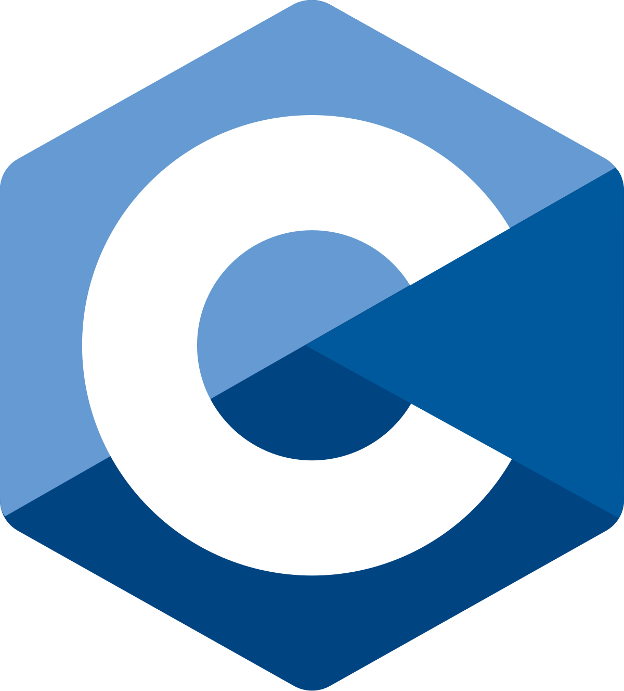
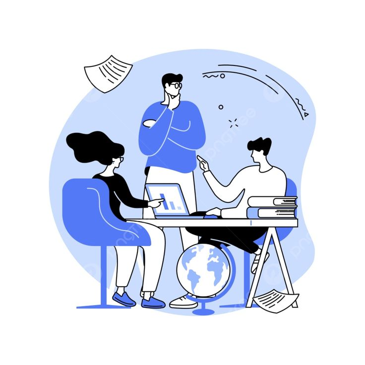
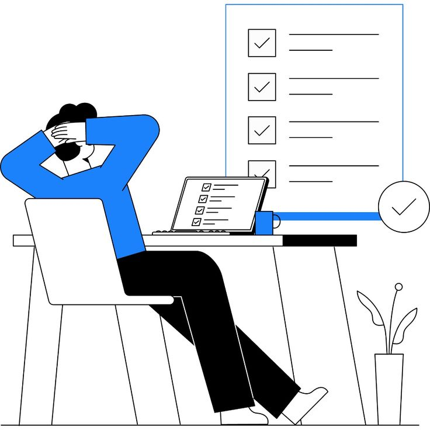
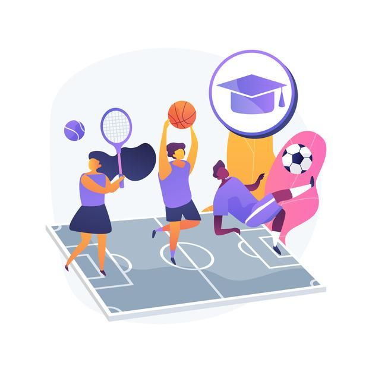
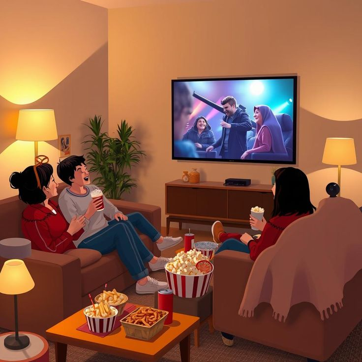

Bonjour, je suis Mohamed El Bachir Gueye
Développeur web HTML & CSS
Passionné par la création de sites web modernes, élégants et responsives. J’aime transformer des idées en interfaces claires et efficaces.
Passionné par le développement web, j’ai suivi un parcours orienté vers la création de sites modernes, responsives et intuitifs. Curieux et motivé,j’aime apprendre de nouvelles technologies et relever des défis pour concevoir des interfaces efficaces et esthétiques.
J’ai effectué ma scolarité élémentaire où j’ai acquis les bases essentielles de la lecture, de l’écriture et du calcul. Au collège, j’ai développé mon sens de l’organisation, de la rigueur et de la curiosité à travers différentes matières, notamment les sciences et l’informatique.
J’ai poursuivi mes études secondaires en série S2 (scientifique), où j’ai approfondi mes connaissances en mathématiques, physique et sciences naturelles. Ce parcours m’a permis de développer une rigueur scientifique et une méthode de travail structurée, couronnée par l’obtention de mon baccalauréat.
Titulaire d’un baccalauréat scientifique (S2), je suis actuellement en Licence 2 Informatique à l’Université Iba Der Thiam de Thiès. Ce parcours me permet de développer mes compétences en programmation, développement web et gestion de projets informatiques, afin de construire une carrière solide dans le domaine numérique.
Solide maîtrise des bases du HTML5 pour structurer efficacement les pages web. Capable de créer des sites bien organisés, accessibles et optimisés pour le référencement.
Bonne connaissance du CSS3 pour concevoir des interfaces modernes et responsives. À l’aise avec Flexbox, Grid et les animations pour améliorer l’expérience utilisateur.
Capacité à rendre les pages interactives grâce à JavaScript. Familiarisé avec la manipulation du DOM et la création de scripts dynamiques pour enrichir les fonctionnalités web.

Connaissances en langage C pour la compréhension des bases de la programmation procédurale, de la logique algorithmique et de la gestion de la mémoire.
Maîtrise des bases du versionnement avec Git et utilisation de GitHub pour collaborer efficacement sur des projets, suivre les modifications et gérer les versions du code.

Je me distingue par un leadership naturel qui me permet de rassembler, motiver et orienter les membres d’une équipe vers un objectif commun. J’aime prendre des initiatives, encourager la collaboration et veiller à ce que chacun puisse donner le meilleur de lui-même.

Mon sens de l’efficacité me pousse à toujours rechercher les meilleures solutions, à optimiser le temps et les ressources disponibles pour obtenir des résultats concrets et de qualité. Je privilégie une approche pratique et réfléchie, en gardant toujours à l’esprit les priorités du projet.

Enfin, j’accorde une grande importance à l’esprit d’équipe. Je crois qu’une atmosphère de confiance, d’écoute et de partage est la clé pour atteindre l’excellence collective. Travailler ensemble, c’est apprendre des autres, progresser ensemble et construire des projets solides et cohérents.

L’organisation est au cœur de ma façon de travailler : je planifie soigneusement mes tâches, j’anticipe les imprévus et je structure mes idées pour avancer avec clarté et méthode. Cela me permet d’évoluer sereinement, même dans des environnements dynamiques.
Français 80%
Anglais 35%
Espagnol 20%
J’aime voyager et découvrir de nouveaux environnements. Rencontrer des personnes différentes, s’ouvrir à d’autres cultures et observer le monde avec un regard neuf m’enrichit énormément. Chaque voyage est pour moi une nouvelle source d’apprentissage et de curiosité.

Je suis passionné par le sport, notamment pour le dépassement de soi et le bien-être qu’il procure. Que ce soit à travers des activités individuelles ou collectives, le sport m’aide à renforcer ma persévérance, ma discipline et mon équilibre de vie.

Les jeux vidéo font partie de mes loisirs favoris. J’apprécie particulièrement les jeux de stratégie et d’aventure qui stimulent la réflexion et la créativité. Ils me permettent également de me détendre tout en développant des compétences en résolution de problèmes et en travail d’équipe.

Le cinéma est également l’un de mes loisirs favoris. J’aime analyser les scénarios, les visuels et les émotions transmises par les films. Cette passion nourrit ma créativité et m’inspire dans ma manière d’imaginer des interfaces et des projets numériques.